equipe
cases
agência
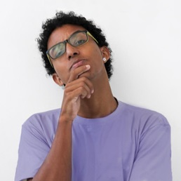
Pedro Victor
Analista de Métricas
Acredito que a beleza mora nas coisas mais simples; admirador de fotografias e música. Escorpiano e "carioca piauiense".
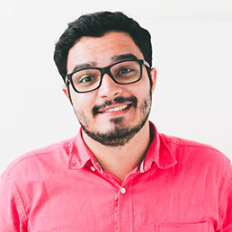
Aurélio
Coordenador de Equipe
Administrador, futuro publicitário. Em constante TOC. Solícito e tranquilo. Novos desafios sempre. A melhor inteligência é a preguiçosa.
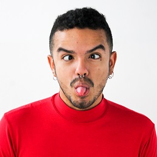
Anderson
Social Media
Eco-gótico, cigano-hipster, geminiano & futuro publicitário. Curto café, gatos & tarô. Crush por Fernando Pessoa, Goya & Lana del Rey.
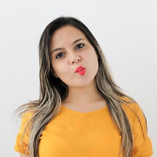
Pamela
Recepção
Pequena menina, calma e tranquila. Encontra na dança a forma mais linda de se expressar, amo gatos, cinema e leituras.
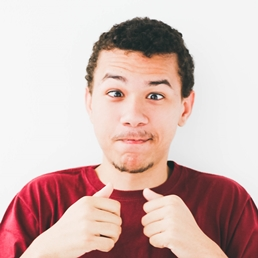
Augusto
Diretor de Arte
Paraense, adora Calypso e Beethoven. Nos esforços para ser um cantor sertanejo acabou sendo diretor de arte.
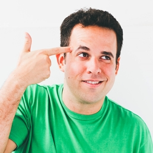
Paulo
Diretor Administrativo
Publicitário e entusiasta de novas ideias. Gosta de novos desafios, de preferência aqueles que tem muita pressão e energia!
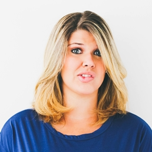
Maíra
Diretora de Criação
Acredito que a comunicação integrada que valoriza a linguagem visual da arte gráfica e da mídia digital é imprescindível nos dias atuais.
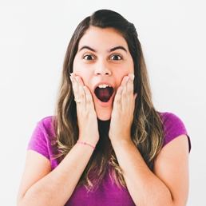
Ada
Atendimento
Menina-mulher, jornalista, leitora ávida, feminista, nada fitness, emotiva, maluca, feliz, bing, nerd, viajante, ama o Brasil e o mundo!
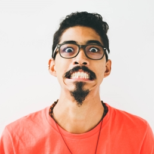
Alysson
Gerente de Métricas
Comunicador, especialista em métricas. Curte literatura, jogos, música e cinema. Severino Cyberpunk. Ia! Ia! Cthulhu Fhtagn!
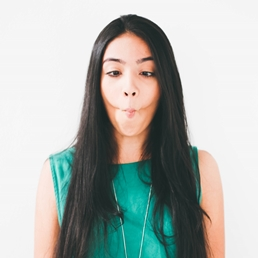
Camila
Social Media
Designer por formação pela Universidade Federal do Piauí e social media por natureza. Libriana, chocólatra, fascinada pelo universo e pelo mar.
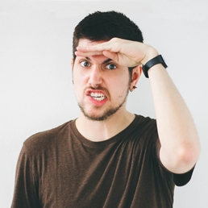
Aníbal
Diretor de Arte
Prazeres são raros. Geralmente envolvem uma mochila, rodas ou asas. Sempre cercado pelas palavras. The world is one’s oyster.
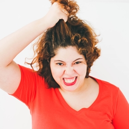
Jéssica
Coordenadora de Equipe
Publicitária, apaixonada por poesia e pelas palavras. Fascinada pelo estudo do comportamento do consumidor. Um vício: Florence and the Machine
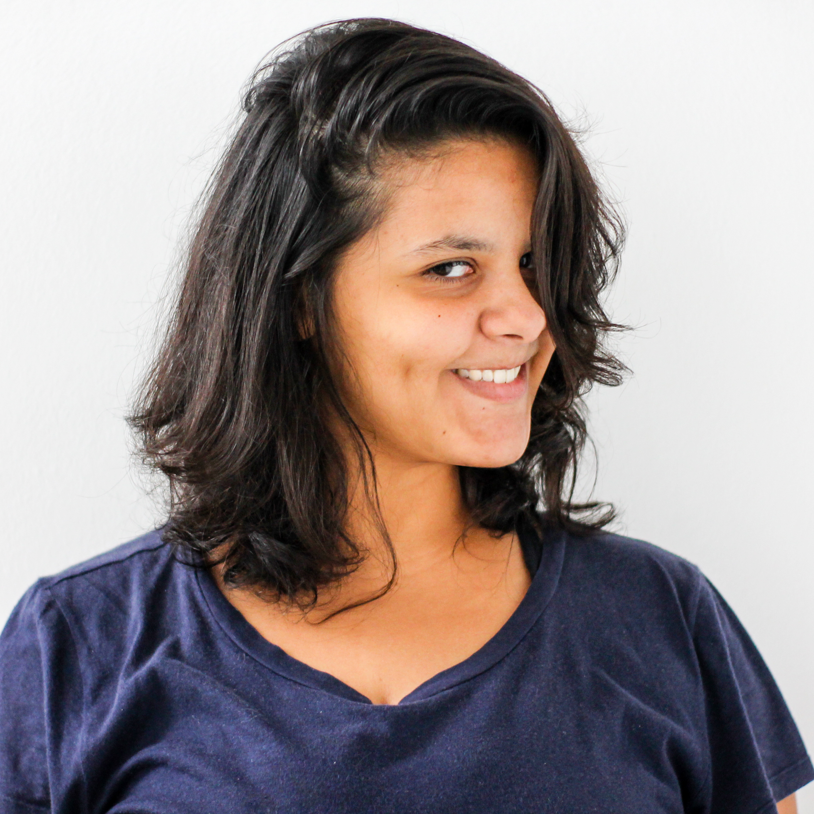
Priscila
Produção de Vídeo
Taurina, boba, desastrada e paulista. Gosto de brincar com sons e me emociono com comida.
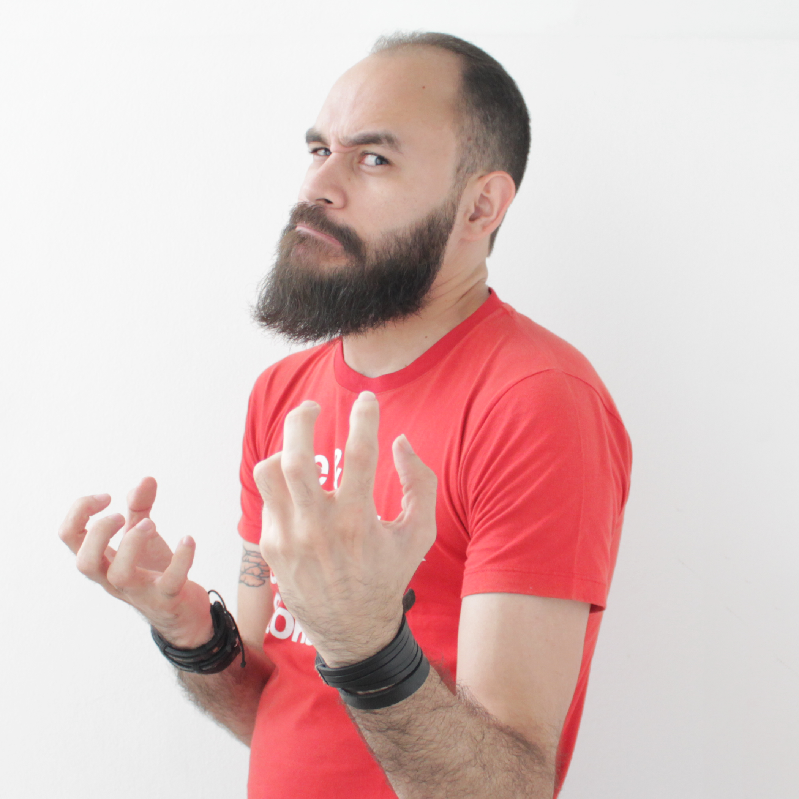
Pedro Augusto
Diretor de Arte
Designer. Curte terror, tipografia e umas bandas que ninguém nunca ouviu falar. Antissocial, mas só quando não o convidam pra comer pizza.
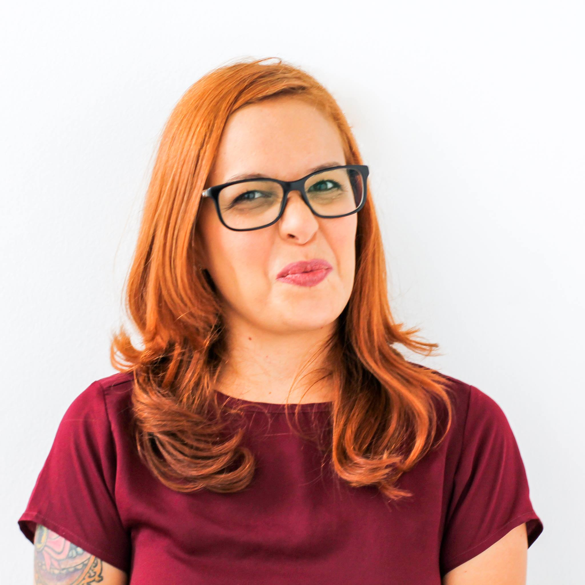
Fabrynne
Atendimento
Pisciana em formato compacto, ansiosa, sensível, formada em Letras e quase jornalista. Fitness desconstruída e feminista em construção. Apaixonada por gatos e viagens.